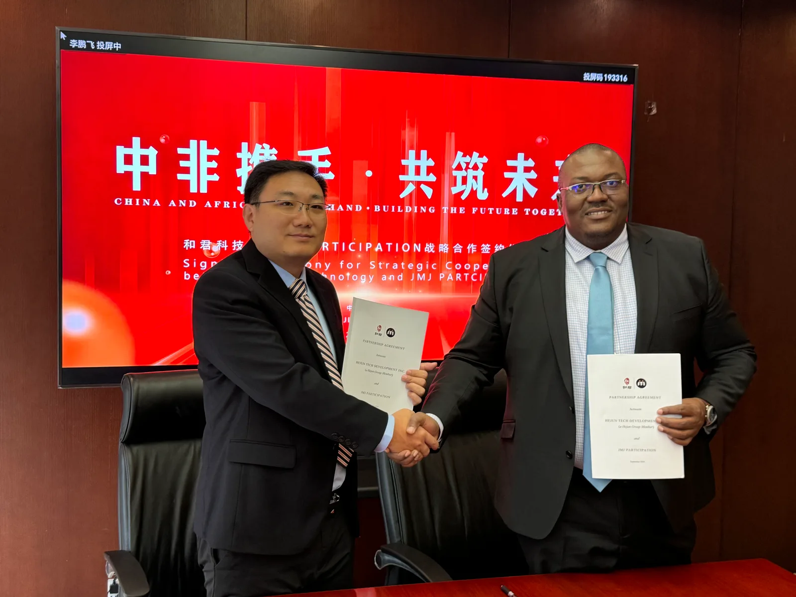
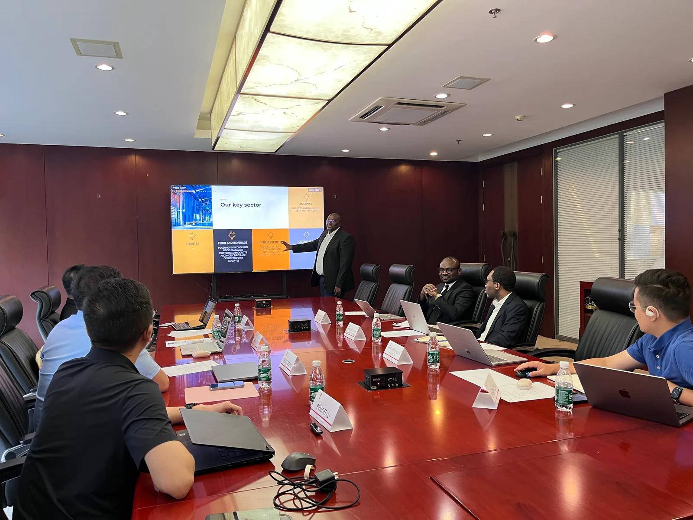

董立鑫与 JMJ CEO Patrice Yantho 达成战略合作，共促中非商业与投资交流
Bruce Dong and JMJ CEO Patrice Yantho forge a strategic partnership to advance China–Africa business and investment exchange.

2024年9月7日，在中非合作论坛峰会期间，海鑫汇创始人兼CEO、和君咨询合伙人董立鑫与 JMJ CEO Patrice Yantho 在北京就推动中国与非洲之间的商业合作与投资交流达成战略合作。
此次合作旨在发挥双方在中国与非洲市场的资源、专业能力及本地化经验优势，进一步搭建连接中国企业与非洲市场的合作桥梁。双方将围绕投资咨询、企业管理、商业培训、项目合作及人才发展等方向展开交流与协同，为中国企业进入非洲市场、非洲企业对接中国资源提供更多专业支持。

海鑫汇视角
在此次合作中，海鑫汇运营中心主任 Helen 迟文劼亦参与相关国际合作与资源对接工作。凭借其长期积累的国际商务及跨文化沟通经验，Helen 将协助推动双方在人才、企业及国际资源层面的进一步连接。
董立鑫表示，中非之间正在形成更加多元、深入的商业与人才合作空间。未来，海鑫汇将持续发挥全球人才与资源连接平台的作用，推动更多中国企业、非洲企业及国际化人才建立长期、务实的合作关系。
此次合作不仅是一次具体的商务合作，也是海鑫汇持续推动中非人才、企业与资源深度连接的重要实践。
原文链接
本合作由 Sika Finance 报道，点击查阅完整原文： Sika Finance 原文 → （若原文链接无法打开，可查看备份图：640.webp →）
本文为海鑫汇对公开合作的整理报道，原始报道见 Sika Finance。 查看原文 →